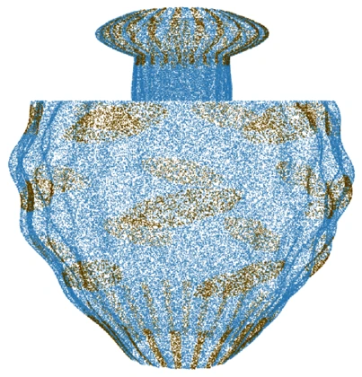
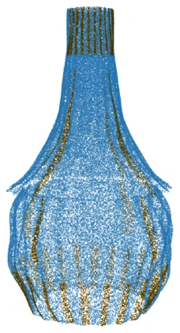
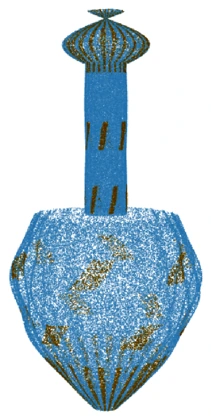
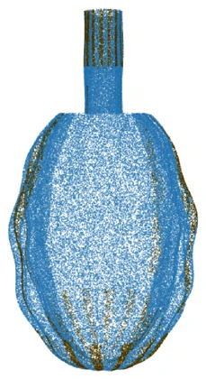
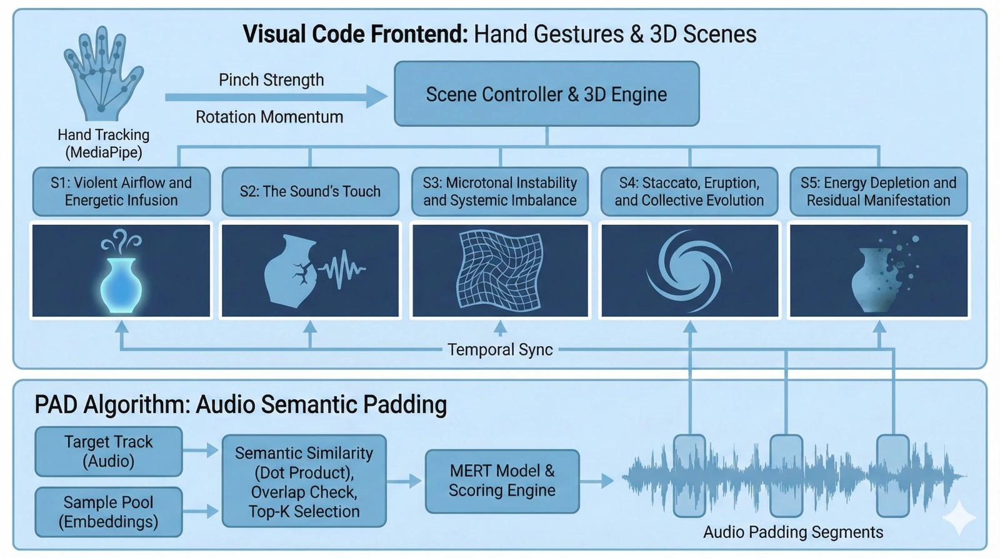

Vesscape 器场
This video presents the complete fixed audiovisual realization of Vesscape, with synchronized score.
Watch on YouTubeVesscape constructs an acoustic force field composed of vessels. Sound does not simply travel through this field; it is carried, transformed, redistributed, and embodied by it.
About the work
This work repeatedly performs the same action: pouring sound into a hollow system.
The breath of the flute is not treated as lyrical material, but as a continuously failing act — blowing, gasping, breaking, losing control. Pitches emerge again and again, yet never settle. The electric bass introduces low-frequency pressure and inertia, an irresistible downward pull that keeps the entire sound field at the edge of overload.
A live electronic system analyzes the performed sound using AI, distributing features such as breath, impact, and pitch deviation across multiple vessel-based sound sources and visual entities. These vessels are not metaphors for containers; they function as receivers of pressure — being filled, stretched, and forced into vibration. The harder the music pushes, the more unstable the vessels become; when the performer attempts to regain control, the system exposes even more fractures.
The structure begins with a nearly violent injection of energy, gradually shifting into a direct confrontation between body and object. Unstable registers and microtonal deviations are continuously amplified; rhythm is fragmented into dense, short bursts of broken gestures, until the system briefly collapses. In the end, sound is exhausted, leaving only residual breath and unfinished pitch afterimages.
This is not a work about “generation.” It is a sustained experiment in pressure — on control, capacity, and limits. The system never truly responds to the performer; it merely records how pressure fails again and again.
这件作品反复做同一件事：向一个中空的系统中灌入声音。
笛子的呼吸并不承担传统意义上的抒情功能，它更接近一种持续失败的行为——吹、喘、破裂、失控。音高不断出现，却始终无法稳定停留。电贝斯提供低频压力与惯性，像一股无法被阻止的下沉力量，使整个声场长期处于过载边缘。
现场电子系统通过 AI 对演奏声音进行分析，将气息、冲击、音高偏移等特征分配给多个基于“罐子”的声源与视觉实体。它们并非单纯作为容器存在，更像压力不断累积和传递的受体：被注入、被撑开、被迫振动。音乐越用力，罐子的状态越趋向失衡；当演奏者试图重新控制，系统反而暴露出更多裂缝。
作品从一次近乎暴力的能量注入开始，逐渐转向身体与器物之间更直接的对抗。不稳定音区与微分音被反复拉扯，节奏被切碎成密集而短促的断裂行为，直到整体系统短暂失控。最后，声音慢慢耗尽，只留气息的残留，以及那些始终没有真正完成的音高幻影。
这并不试图讨论“生成”本身，更像一场围绕控制、承载与极限展开的持续施压实验。系统从未真正回应演奏者，它只是不断记录压力如何一次次失败。
Vessel atlas
Ten digital vessel forms, reconstructed as point clouds. Select a form to view it at full size.








System workflow
Two linked processes operate during performance: hand gestures shape the digital vessels, while live instrumental sound is analysed and distributed across the physical vessel array.

Visual interaction
MediaPipe hand tracking provides pinch strength and rotation momentum to control the digital vessel geometry and scene transitions.
Real-time sound analysis
The acoustic backend continuously analyses the Dizi and electric bass for transients, spectral centroid and pitch. Incoming audio segments are compared through MERT embeddings with a pre-embedded library of vessel recordings—blowing, striking and shaking. Similarity scoring and Top-K selection retrieve related material.
Distribution to physical vessels
Selected sound segments are dynamically routed to individual physical vessels, each containing a loudspeaker. The vessels act as separate acoustic emitters across the room, turning instrumental actions into localized echoes, resonances and residues. This is the sound-distribution process in the installation configuration; the film presents a fixed audiovisual realization.
From live sound to the vessel array
Instrumental input
Dizi and electric bass
Continuous analysis
Transients, spectral centroid and pitch
Vessel-sound retrieval
MERT similarity matching and Top-K selection
Spatial distribution
Selected segments routed to individual vessel loudspeakers
Five continuous scenes
From infusion to depletion: the score’s changing vessel configurations.
Scroll sideways to view the full table.
| Time | State | Vessels | Musical and spatial behaviour |
|---|---|---|---|
| 00:00–01:32 | Infusion | General Jar | Breath-driven expansion and stretching; internal colour follows airflow intensity. |
| 01:32–02:25 | Touch | Six-vessel group | Transient articulations trigger local vibrations and spatially separated responses. |
| 02:25–03:41 | Instability | Six-vessel group | Pitch deviations produce persistent positional imbalance and unstable spatial routing. |
| 03:41–06:05 | Eruption | All ten forms | Individual movements develop into collective vibration, dense resonance and flowing colour. |
| 06:05–06:52 | Depletion | Ten forms, diminishing | Echoes decay, colour desaturates, and a brief visual afterimage remains after the sound ceases. |
Six-vessel group: General Jar, Yuhuchun, Tianqiu, Cong, Garlic, and Moonflask.